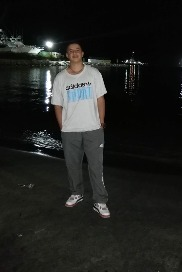

Andrés Yarce Botero
Specialist in satellite data processing and emission inversion methods. Focused on integrating high-resolution atmospheric data with advanced computational models.

Álvaro de Jesus Ochoa Calle
Expert in environmental consultancy and policy assessment. Dedicated to bridging scientific modeling and decision-making frameworks for sustainable management.

Juan Jesus Valdez Vasquez
Developer dedicated to the scientific study of environmental pollution.

Michiel van Weele
Scientific Advisor
Atmospheric scientist specializing in atmospheric composition,
air quality, climate interactions, and satellite observations.

John Erick Hoyos Giraldo
Systems Engineer focused on Backend and QA. I develop scalable, clean-code backend solutions, applying unit and manual tests to ensure stable, functional, and defect-free software in various types of projects.
About LUWA
LUWA is an atmospheric intelligence platform that integrates numerical modeling, satellite observations, ground-based sensors, and cloud computing to generate information on air quality, emissions, and atmospheric dynamics. Its infrastructure enables on-demand atmospheric simulations and transforms complex scientific data into accessible products for public institutions, researchers, businesses, and communities.
Mission
To democratize access to advanced atmospheric information to improve the understanding and management of air quality and emissions, especially in areas where monitoring infrastructure is limited. LUWA seeks to transform high-level scientific capabilities into operational tools that support public health, environmental management, research, and regional decision-making.
Learn more about LUWA's capabilities, services and areas of application.
↓ Download Brochure